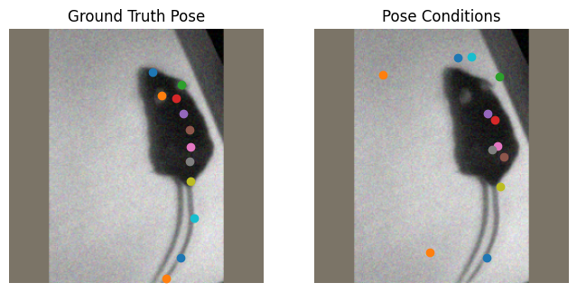
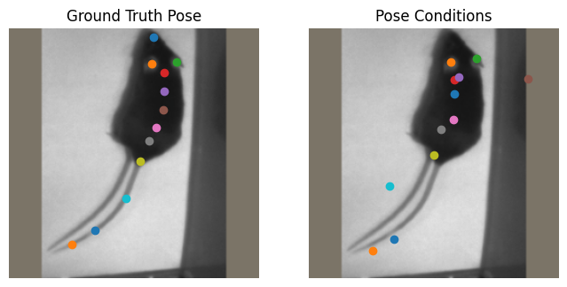
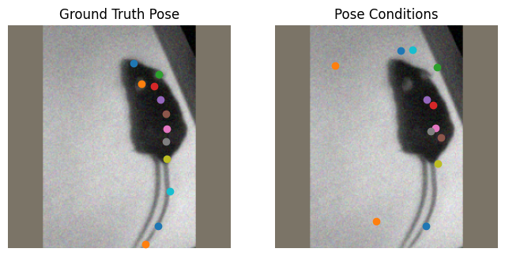
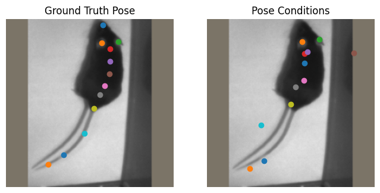

DeepLabCut - Tutorial for BUCTD models#
This tutorial introduces the use of bottom-up conditioned top-down pose estimation models (also named BUCTD or CTD) in DeepLabCut. This architecture is state-of-the-art in crowded images (when animals are interacting closly with one another), and carry the huge advantage that they can be used to directly track animals, removing the need for tracklet creation or stitching.
Some resources that can be useful:
Multi-animal user guide: DeepLabCut’s Documentation: User Guide for Multi-Animal projects
Note: In this notebook, we first train a BU model. Typically, you would already have a BU model, that is not performant enought. That’s why you go for the BUCTD approach.
Introduction#
This notebook is an introduction to training and using CTD models in DeepLabCut, through the maDLC Tri-Mouse Benchmark Dataset presented Lauer et al. 2022 (Nature Methods). For more information, you can check out the DeepLabCut Benchmark Datasets.
In this notebook, we’ll
train an bottom-up model that can provide conditions for the CTD model
evaluate the bottom-up model
(optional/advanced) learn how the CTD model is trained with generative sampling
train the CTD model
evaluate the CTD model
(Nice feature of CTD models) use the CTD model to track individuals
Note: This notebook can also be run locally. However, using a GPU is recommended to train the models and run video inference. Just skip the Installing DeepLabCut on COLAB section
⚠️⚠️ Change the Runtime type to use a GPU!⚠️⚠️#
First, go to “Runtime” ->”change runtime type”->select “Python3”, and then select “GPU”.
Installing DeepLabCut on COLAB#
Let’s install the latest version of DeepLabCut, straight from GitHub.
!pip install --pre deeplabcut
Collecting deeplabcut
Cloning https://github.com/DeepLabCut/DeepLabCut.git (to revision lucas/buctd_v2) to /tmp/pip-install-p_2aupou/deeplabcut_38affa993eac4f18a4fcf05ba8f80e79
Running command git clone --filter=blob:none --quiet https://github.com/DeepLabCut/DeepLabCut.git /tmp/pip-install-p_2aupou/deeplabcut_38affa993eac4f18a4fcf05ba8f80e79
Running command git checkout -b lucas/buctd_v2 --track origin/lucas/buctd_v2
Switched to a new branch 'lucas/buctd_v2'
Branch 'lucas/buctd_v2' set up to track remote branch 'lucas/buctd_v2' from 'origin'.
Resolved https://github.com/DeepLabCut/DeepLabCut.git to commit 12cf3fa01b91bbc8c73c1efcecebf83815164da0
Installing build dependencies ... ?25l?25hdone
Getting requirements to build wheel ... ?25l?25hdone
Preparing metadata (pyproject.toml) ... ?25l?25hdone
Collecting albumentations<=1.4.3 (from deeplabcut)
Downloading albumentations-1.4.3-py3-none-any.whl.metadata (37 kB)
Collecting dlclibrary>=0.0.7 (from deeplabcut)
Downloading dlclibrary-0.0.7-py3-none-any.whl.metadata (4.2 kB)
Requirement already satisfied: einops in /usr/local/lib/python3.11/dist-packages (from deeplabcut) (0.8.1)
Collecting filterpy>=1.4.4 (from deeplabcut)
Downloading filterpy-1.4.5.zip (177 kB)
━━━━━━━━━━━━━━━━━━━━━━━━━━━━━━━━━━━━━━ 178.0/178.0 kB 10.1 MB/s eta 0:00:00
?25h Preparing metadata (setup.py) ... ?25l?25hdone
Collecting ruamel.yaml>=0.15.0 (from deeplabcut)
Downloading ruamel.yaml-0.18.10-py3-none-any.whl.metadata (23 kB)
Collecting imgaug>=0.4.0 (from deeplabcut)
Downloading imgaug-0.4.0-py2.py3-none-any.whl.metadata (1.8 kB)
Requirement already satisfied: imageio-ffmpeg in /usr/local/lib/python3.11/dist-packages (from deeplabcut) (0.6.0)
Requirement already satisfied: numba>=0.54 in /usr/local/lib/python3.11/dist-packages (from deeplabcut) (0.60.0)
Collecting matplotlib!=3.7.0,!=3.7.1,<3.9,>=3.3 (from deeplabcut)
Downloading matplotlib-3.8.4-cp311-cp311-manylinux_2_17_x86_64.manylinux2014_x86_64.whl.metadata (5.8 kB)
Requirement already satisfied: networkx>=2.6 in /usr/local/lib/python3.11/dist-packages (from deeplabcut) (3.4.2)
Collecting numpy<2.0.0,>=1.18.5 (from deeplabcut)
Downloading numpy-1.26.4-cp311-cp311-manylinux_2_17_x86_64.manylinux2014_x86_64.whl.metadata (61 kB)
━━━━━━━━━━━━━━━━━━━━━━━━━━━━━━━━━━━━━━━━ 61.0/61.0 kB 5.2 MB/s eta 0:00:00
?25hRequirement already satisfied: pandas!=1.5.0,>=1.0.1 in /usr/local/lib/python3.11/dist-packages (from deeplabcut) (2.2.2)
Requirement already satisfied: scikit-image>=0.17 in /usr/local/lib/python3.11/dist-packages (from deeplabcut) (0.25.2)
Requirement already satisfied: scikit-learn>=1.0 in /usr/local/lib/python3.11/dist-packages (from deeplabcut) (1.6.1)
Requirement already satisfied: scipy>=1.9 in /usr/local/lib/python3.11/dist-packages (from deeplabcut) (1.14.1)
Requirement already satisfied: statsmodels>=0.11 in /usr/local/lib/python3.11/dist-packages (from deeplabcut) (0.14.4)
Collecting tables==3.8.0 (from deeplabcut)
Downloading tables-3.8.0-cp311-cp311-manylinux_2_17_x86_64.manylinux2014_x86_64.whl.metadata (2.2 kB)
Requirement already satisfied: timm in /usr/local/lib/python3.11/dist-packages (from deeplabcut) (1.0.15)
Requirement already satisfied: torch>=2.0.0 in /usr/local/lib/python3.11/dist-packages (from deeplabcut) (2.6.0+cu124)
Requirement already satisfied: torchvision in /usr/local/lib/python3.11/dist-packages (from deeplabcut) (0.21.0+cu124)
Requirement already satisfied: tqdm in /usr/local/lib/python3.11/dist-packages (from deeplabcut) (4.67.1)
Requirement already satisfied: pycocotools in /usr/local/lib/python3.11/dist-packages (from deeplabcut) (2.0.8)
Requirement already satisfied: pyyaml in /usr/local/lib/python3.11/dist-packages (from deeplabcut) (6.0.2)
Requirement already satisfied: Pillow>=7.1 in /usr/local/lib/python3.11/dist-packages (from deeplabcut) (11.1.0)
Requirement already satisfied: cython>=0.29.21 in /usr/local/lib/python3.11/dist-packages (from tables==3.8.0->deeplabcut) (3.0.12)
Requirement already satisfied: numexpr>=2.6.2 in /usr/local/lib/python3.11/dist-packages (from tables==3.8.0->deeplabcut) (2.10.2)
Collecting blosc2~=2.0.0 (from tables==3.8.0->deeplabcut)
Downloading blosc2-2.0.0-cp311-cp311-manylinux_2_17_x86_64.manylinux2014_x86_64.whl.metadata (11 kB)
Requirement already satisfied: packaging in /usr/local/lib/python3.11/dist-packages (from tables==3.8.0->deeplabcut) (24.2)
Requirement already satisfied: py-cpuinfo in /usr/local/lib/python3.11/dist-packages (from tables==3.8.0->deeplabcut) (9.0.0)
Requirement already satisfied: typing-extensions>=4.9.0 in /usr/local/lib/python3.11/dist-packages (from albumentations<=1.4.3->deeplabcut) (4.13.1)
Requirement already satisfied: opencv-python-headless>=4.9.0 in /usr/local/lib/python3.11/dist-packages (from albumentations<=1.4.3->deeplabcut) (4.11.0.86)
Requirement already satisfied: huggingface-hub in /usr/local/lib/python3.11/dist-packages (from dlclibrary>=0.0.7->deeplabcut) (0.30.1)
Requirement already satisfied: six in /usr/local/lib/python3.11/dist-packages (from imgaug>=0.4.0->deeplabcut) (1.17.0)
Requirement already satisfied: opencv-python in /usr/local/lib/python3.11/dist-packages (from imgaug>=0.4.0->deeplabcut) (4.11.0.86)
Requirement already satisfied: imageio in /usr/local/lib/python3.11/dist-packages (from imgaug>=0.4.0->deeplabcut) (2.37.0)
Requirement already satisfied: Shapely in /usr/local/lib/python3.11/dist-packages (from imgaug>=0.4.0->deeplabcut) (2.1.0)
Requirement already satisfied: contourpy>=1.0.1 in /usr/local/lib/python3.11/dist-packages (from matplotlib!=3.7.0,!=3.7.1,<3.9,>=3.3->deeplabcut) (1.3.1)
Requirement already satisfied: cycler>=0.10 in /usr/local/lib/python3.11/dist-packages (from matplotlib!=3.7.0,!=3.7.1,<3.9,>=3.3->deeplabcut) (0.12.1)
Requirement already satisfied: fonttools>=4.22.0 in /usr/local/lib/python3.11/dist-packages (from matplotlib!=3.7.0,!=3.7.1,<3.9,>=3.3->deeplabcut) (4.57.0)
Requirement already satisfied: kiwisolver>=1.3.1 in /usr/local/lib/python3.11/dist-packages (from matplotlib!=3.7.0,!=3.7.1,<3.9,>=3.3->deeplabcut) (1.4.8)
Requirement already satisfied: pyparsing>=2.3.1 in /usr/local/lib/python3.11/dist-packages (from matplotlib!=3.7.0,!=3.7.1,<3.9,>=3.3->deeplabcut) (3.2.3)
Requirement already satisfied: python-dateutil>=2.7 in /usr/local/lib/python3.11/dist-packages (from matplotlib!=3.7.0,!=3.7.1,<3.9,>=3.3->deeplabcut) (2.8.2)
Requirement already satisfied: llvmlite<0.44,>=0.43.0dev0 in /usr/local/lib/python3.11/dist-packages (from numba>=0.54->deeplabcut) (0.43.0)
Requirement already satisfied: pytz>=2020.1 in /usr/local/lib/python3.11/dist-packages (from pandas!=1.5.0,>=1.0.1->deeplabcut) (2025.2)
Requirement already satisfied: tzdata>=2022.7 in /usr/local/lib/python3.11/dist-packages (from pandas!=1.5.0,>=1.0.1->deeplabcut) (2025.2)
Collecting ruamel.yaml.clib>=0.2.7 (from ruamel.yaml>=0.15.0->deeplabcut)
Downloading ruamel.yaml.clib-0.2.12-cp311-cp311-manylinux_2_17_x86_64.manylinux2014_x86_64.whl.metadata (2.7 kB)
Requirement already satisfied: tifffile>=2022.8.12 in /usr/local/lib/python3.11/dist-packages (from scikit-image>=0.17->deeplabcut) (2025.3.30)
Requirement already satisfied: lazy-loader>=0.4 in /usr/local/lib/python3.11/dist-packages (from scikit-image>=0.17->deeplabcut) (0.4)
Requirement already satisfied: joblib>=1.2.0 in /usr/local/lib/python3.11/dist-packages (from scikit-learn>=1.0->deeplabcut) (1.4.2)
Requirement already satisfied: threadpoolctl>=3.1.0 in /usr/local/lib/python3.11/dist-packages (from scikit-learn>=1.0->deeplabcut) (3.6.0)
Requirement already satisfied: patsy>=0.5.6 in /usr/local/lib/python3.11/dist-packages (from statsmodels>=0.11->deeplabcut) (1.0.1)
Requirement already satisfied: filelock in /usr/local/lib/python3.11/dist-packages (from torch>=2.0.0->deeplabcut) (3.18.0)
Requirement already satisfied: jinja2 in /usr/local/lib/python3.11/dist-packages (from torch>=2.0.0->deeplabcut) (3.1.6)
Requirement already satisfied: fsspec in /usr/local/lib/python3.11/dist-packages (from torch>=2.0.0->deeplabcut) (2025.3.2)
Collecting nvidia-cuda-nvrtc-cu12==12.4.127 (from torch>=2.0.0->deeplabcut)
Downloading nvidia_cuda_nvrtc_cu12-12.4.127-py3-none-manylinux2014_x86_64.whl.metadata (1.5 kB)
Collecting nvidia-cuda-runtime-cu12==12.4.127 (from torch>=2.0.0->deeplabcut)
Downloading nvidia_cuda_runtime_cu12-12.4.127-py3-none-manylinux2014_x86_64.whl.metadata (1.5 kB)
Collecting nvidia-cuda-cupti-cu12==12.4.127 (from torch>=2.0.0->deeplabcut)
Downloading nvidia_cuda_cupti_cu12-12.4.127-py3-none-manylinux2014_x86_64.whl.metadata (1.6 kB)
Collecting nvidia-cudnn-cu12==9.1.0.70 (from torch>=2.0.0->deeplabcut)
Downloading nvidia_cudnn_cu12-9.1.0.70-py3-none-manylinux2014_x86_64.whl.metadata (1.6 kB)
Collecting nvidia-cublas-cu12==12.4.5.8 (from torch>=2.0.0->deeplabcut)
Downloading nvidia_cublas_cu12-12.4.5.8-py3-none-manylinux2014_x86_64.whl.metadata (1.5 kB)
Collecting nvidia-cufft-cu12==11.2.1.3 (from torch>=2.0.0->deeplabcut)
Downloading nvidia_cufft_cu12-11.2.1.3-py3-none-manylinux2014_x86_64.whl.metadata (1.5 kB)
Collecting nvidia-curand-cu12==10.3.5.147 (from torch>=2.0.0->deeplabcut)
Downloading nvidia_curand_cu12-10.3.5.147-py3-none-manylinux2014_x86_64.whl.metadata (1.5 kB)
Collecting nvidia-cusolver-cu12==11.6.1.9 (from torch>=2.0.0->deeplabcut)
Downloading nvidia_cusolver_cu12-11.6.1.9-py3-none-manylinux2014_x86_64.whl.metadata (1.6 kB)
Collecting nvidia-cusparse-cu12==12.3.1.170 (from torch>=2.0.0->deeplabcut)
Downloading nvidia_cusparse_cu12-12.3.1.170-py3-none-manylinux2014_x86_64.whl.metadata (1.6 kB)
Requirement already satisfied: nvidia-cusparselt-cu12==0.6.2 in /usr/local/lib/python3.11/dist-packages (from torch>=2.0.0->deeplabcut) (0.6.2)
Requirement already satisfied: nvidia-nccl-cu12==2.21.5 in /usr/local/lib/python3.11/dist-packages (from torch>=2.0.0->deeplabcut) (2.21.5)
Requirement already satisfied: nvidia-nvtx-cu12==12.4.127 in /usr/local/lib/python3.11/dist-packages (from torch>=2.0.0->deeplabcut) (12.4.127)
Collecting nvidia-nvjitlink-cu12==12.4.127 (from torch>=2.0.0->deeplabcut)
Downloading nvidia_nvjitlink_cu12-12.4.127-py3-none-manylinux2014_x86_64.whl.metadata (1.5 kB)
Requirement already satisfied: triton==3.2.0 in /usr/local/lib/python3.11/dist-packages (from torch>=2.0.0->deeplabcut) (3.2.0)
Requirement already satisfied: sympy==1.13.1 in /usr/local/lib/python3.11/dist-packages (from torch>=2.0.0->deeplabcut) (1.13.1)
Requirement already satisfied: mpmath<1.4,>=1.1.0 in /usr/local/lib/python3.11/dist-packages (from sympy==1.13.1->torch>=2.0.0->deeplabcut) (1.3.0)
Requirement already satisfied: safetensors in /usr/local/lib/python3.11/dist-packages (from timm->deeplabcut) (0.5.3)
Requirement already satisfied: msgpack in /usr/local/lib/python3.11/dist-packages (from blosc2~=2.0.0->tables==3.8.0->deeplabcut) (1.1.0)
Requirement already satisfied: requests in /usr/local/lib/python3.11/dist-packages (from huggingface-hub->dlclibrary>=0.0.7->deeplabcut) (2.32.3)
Requirement already satisfied: MarkupSafe>=2.0 in /usr/local/lib/python3.11/dist-packages (from jinja2->torch>=2.0.0->deeplabcut) (3.0.2)
Requirement already satisfied: charset-normalizer<4,>=2 in /usr/local/lib/python3.11/dist-packages (from requests->huggingface-hub->dlclibrary>=0.0.7->deeplabcut) (3.4.1)
Requirement already satisfied: idna<4,>=2.5 in /usr/local/lib/python3.11/dist-packages (from requests->huggingface-hub->dlclibrary>=0.0.7->deeplabcut) (3.10)
Requirement already satisfied: urllib3<3,>=1.21.1 in /usr/local/lib/python3.11/dist-packages (from requests->huggingface-hub->dlclibrary>=0.0.7->deeplabcut) (2.3.0)
Requirement already satisfied: certifi>=2017.4.17 in /usr/local/lib/python3.11/dist-packages (from requests->huggingface-hub->dlclibrary>=0.0.7->deeplabcut) (2025.1.31)
Downloading tables-3.8.0-cp311-cp311-manylinux_2_17_x86_64.manylinux2014_x86_64.whl (6.5 MB)
━━━━━━━━━━━━━━━━━━━━━━━━━━━━━━━━━━━━━━━━ 6.5/6.5 MB 105.3 MB/s eta 0:00:00
?25hDownloading albumentations-1.4.3-py3-none-any.whl (137 kB)
━━━━━━━━━━━━━━━━━━━━━━━━━━━━━━━━━━━━━━━━ 137.0/137.0 kB 13.7 MB/s eta 0:00:00
?25hDownloading dlclibrary-0.0.7-py3-none-any.whl (16 kB)
Downloading imgaug-0.4.0-py2.py3-none-any.whl (948 kB)
━━━━━━━━━━━━━━━━━━━━━━━━━━━━━━━━━━━━━━━━ 948.0/948.0 kB 52.0 MB/s eta 0:00:00
?25hDownloading matplotlib-3.8.4-cp311-cp311-manylinux_2_17_x86_64.manylinux2014_x86_64.whl (11.6 MB)
━━━━━━━━━━━━━━━━━━━━━━━━━━━━━━━━━━━━━━━━ 11.6/11.6 MB 103.8 MB/s eta 0:00:00
?25hDownloading numpy-1.26.4-cp311-cp311-manylinux_2_17_x86_64.manylinux2014_x86_64.whl (18.3 MB)
━━━━━━━━━━━━━━━━━━━━━━━━━━━━━━━━━━━━━━━━ 18.3/18.3 MB 95.4 MB/s eta 0:00:00
?25hDownloading ruamel.yaml-0.18.10-py3-none-any.whl (117 kB)
━━━━━━━━━━━━━━━━━━━━━━━━━━━━━━━━━━━━━━━━ 117.7/117.7 kB 11.0 MB/s eta 0:00:00
?25hDownloading nvidia_cublas_cu12-12.4.5.8-py3-none-manylinux2014_x86_64.whl (363.4 MB)
━━━━━━━━━━━━━━━━━━━━━━━━━━━━━━━━━━━━━━━━ 363.4/363.4 MB 4.2 MB/s eta 0:00:00
?25hDownloading nvidia_cuda_cupti_cu12-12.4.127-py3-none-manylinux2014_x86_64.whl (13.8 MB)
━━━━━━━━━━━━━━━━━━━━━━━━━━━━━━━━━━━━━━━━ 13.8/13.8 MB 99.4 MB/s eta 0:00:00
?25hDownloading nvidia_cuda_nvrtc_cu12-12.4.127-py3-none-manylinux2014_x86_64.whl (24.6 MB)
━━━━━━━━━━━━━━━━━━━━━━━━━━━━━━━━━━━━━━━━ 24.6/24.6 MB 88.6 MB/s eta 0:00:00
?25hDownloading nvidia_cuda_runtime_cu12-12.4.127-py3-none-manylinux2014_x86_64.whl (883 kB)
━━━━━━━━━━━━━━━━━━━━━━━━━━━━━━━━━━━━━━━━ 883.7/883.7 kB 54.9 MB/s eta 0:00:00
?25hDownloading nvidia_cudnn_cu12-9.1.0.70-py3-none-manylinux2014_x86_64.whl (664.8 MB)
━━━━━━━━━━━━━━━━━━━━━━━━━━━━━━━━━━━━━━━━ 664.8/664.8 MB 1.2 MB/s eta 0:00:00
?25hDownloading nvidia_cufft_cu12-11.2.1.3-py3-none-manylinux2014_x86_64.whl (211.5 MB)
━━━━━━━━━━━━━━━━━━━━━━━━━━━━━━━━━━━━━━━━ 211.5/211.5 MB 3.9 MB/s eta 0:00:00
?25hDownloading nvidia_curand_cu12-10.3.5.147-py3-none-manylinux2014_x86_64.whl (56.3 MB)
━━━━━━━━━━━━━━━━━━━━━━━━━━━━━━━━━━━━━━━━ 56.3/56.3 MB 22.8 MB/s eta 0:00:00
?25hDownloading nvidia_cusolver_cu12-11.6.1.9-py3-none-manylinux2014_x86_64.whl (127.9 MB)
━━━━━━━━━━━━━━━━━━━━━━━━━━━━━━━━━━━━━━━━ 127.9/127.9 MB 7.3 MB/s eta 0:00:00
?25hDownloading nvidia_cusparse_cu12-12.3.1.170-py3-none-manylinux2014_x86_64.whl (207.5 MB)
━━━━━━━━━━━━━━━━━━━━━━━━━━━━━━━━━━━━━━━━ 207.5/207.5 MB 5.4 MB/s eta 0:00:00
?25hDownloading nvidia_nvjitlink_cu12-12.4.127-py3-none-manylinux2014_x86_64.whl (21.1 MB)
━━━━━━━━━━━━━━━━━━━━━━━━━━━━━━━━━━━━━━━━ 21.1/21.1 MB 41.7 MB/s eta 0:00:00
?25hDownloading blosc2-2.0.0-cp311-cp311-manylinux_2_17_x86_64.manylinux2014_x86_64.whl (3.9 MB)
━━━━━━━━━━━━━━━━━━━━━━━━━━━━━━━━━━━━━━━━ 3.9/3.9 MB 91.9 MB/s eta 0:00:00
?25hDownloading ruamel.yaml.clib-0.2.12-cp311-cp311-manylinux_2_17_x86_64.manylinux2014_x86_64.whl (739 kB)
━━━━━━━━━━━━━━━━━━━━━━━━━━━━━━━━━━━━━━━━ 739.1/739.1 kB 51.2 MB/s eta 0:00:00
?25hBuilding wheels for collected packages: deeplabcut, filterpy
Building wheel for deeplabcut (pyproject.toml) ... ?25l?25hdone
Created wheel for deeplabcut: filename=deeplabcut-3.0.0rc8-py3-none-any.whl size=2135196 sha256=5fed7cbc1c688b63dba5c4ec999ec8cd64ff183633f52f61dae83c99bef61086
Stored in directory: /tmp/pip-ephem-wheel-cache-mksbbfnl/wheels/f5/b8/31/9da4b9cf29c390764ce8fb3cda190fa42dce894367ddf37cc9
Building wheel for filterpy (setup.py) ... ?25l?25hdone
Created wheel for filterpy: filename=filterpy-1.4.5-py3-none-any.whl size=110460 sha256=ba55d3e7bb10d2a01b1ad749dd6776e6fe11dc542fa55874879db636b2932478
Stored in directory: /root/.cache/pip/wheels/12/dc/3c/e12983eac132d00f82a20c6cbe7b42ce6e96190ef8fa2d15e1
Successfully built deeplabcut filterpy
Installing collected packages: ruamel.yaml.clib, nvidia-nvjitlink-cu12, nvidia-curand-cu12, nvidia-cufft-cu12, nvidia-cuda-runtime-cu12, nvidia-cuda-nvrtc-cu12, nvidia-cuda-cupti-cu12, nvidia-cublas-cu12, numpy, blosc2, ruamel.yaml, nvidia-cusparse-cu12, nvidia-cudnn-cu12, tables, nvidia-cusolver-cu12, matplotlib, dlclibrary, imgaug, filterpy, albumentations, deeplabcut
Attempting uninstall: nvidia-nvjitlink-cu12
Found existing installation: nvidia-nvjitlink-cu12 12.5.82
Uninstalling nvidia-nvjitlink-cu12-12.5.82:
Successfully uninstalled nvidia-nvjitlink-cu12-12.5.82
Attempting uninstall: nvidia-curand-cu12
Found existing installation: nvidia-curand-cu12 10.3.6.82
Uninstalling nvidia-curand-cu12-10.3.6.82:
Successfully uninstalled nvidia-curand-cu12-10.3.6.82
Attempting uninstall: nvidia-cufft-cu12
Found existing installation: nvidia-cufft-cu12 11.2.3.61
Uninstalling nvidia-cufft-cu12-11.2.3.61:
Successfully uninstalled nvidia-cufft-cu12-11.2.3.61
Attempting uninstall: nvidia-cuda-runtime-cu12
Found existing installation: nvidia-cuda-runtime-cu12 12.5.82
Uninstalling nvidia-cuda-runtime-cu12-12.5.82:
Successfully uninstalled nvidia-cuda-runtime-cu12-12.5.82
Attempting uninstall: nvidia-cuda-nvrtc-cu12
Found existing installation: nvidia-cuda-nvrtc-cu12 12.5.82
Uninstalling nvidia-cuda-nvrtc-cu12-12.5.82:
Successfully uninstalled nvidia-cuda-nvrtc-cu12-12.5.82
Attempting uninstall: nvidia-cuda-cupti-cu12
Found existing installation: nvidia-cuda-cupti-cu12 12.5.82
Uninstalling nvidia-cuda-cupti-cu12-12.5.82:
Successfully uninstalled nvidia-cuda-cupti-cu12-12.5.82
Attempting uninstall: nvidia-cublas-cu12
Found existing installation: nvidia-cublas-cu12 12.5.3.2
Uninstalling nvidia-cublas-cu12-12.5.3.2:
Successfully uninstalled nvidia-cublas-cu12-12.5.3.2
Attempting uninstall: numpy
Found existing installation: numpy 2.0.2
Uninstalling numpy-2.0.2:
Successfully uninstalled numpy-2.0.2
Attempting uninstall: blosc2
Found existing installation: blosc2 3.2.1
Uninstalling blosc2-3.2.1:
Successfully uninstalled blosc2-3.2.1
Attempting uninstall: nvidia-cusparse-cu12
Found existing installation: nvidia-cusparse-cu12 12.5.1.3
Uninstalling nvidia-cusparse-cu12-12.5.1.3:
Successfully uninstalled nvidia-cusparse-cu12-12.5.1.3
Attempting uninstall: nvidia-cudnn-cu12
Found existing installation: nvidia-cudnn-cu12 9.3.0.75
Uninstalling nvidia-cudnn-cu12-9.3.0.75:
Successfully uninstalled nvidia-cudnn-cu12-9.3.0.75
Attempting uninstall: tables
Found existing installation: tables 3.10.2
Uninstalling tables-3.10.2:
Successfully uninstalled tables-3.10.2
Attempting uninstall: nvidia-cusolver-cu12
Found existing installation: nvidia-cusolver-cu12 11.6.3.83
Uninstalling nvidia-cusolver-cu12-11.6.3.83:
Successfully uninstalled nvidia-cusolver-cu12-11.6.3.83
Attempting uninstall: matplotlib
Found existing installation: matplotlib 3.10.0
Uninstalling matplotlib-3.10.0:
Successfully uninstalled matplotlib-3.10.0
Attempting uninstall: albumentations
Found existing installation: albumentations 2.0.5
Uninstalling albumentations-2.0.5:
Successfully uninstalled albumentations-2.0.5
ERROR: pip's dependency resolver does not currently take into account all the packages that are installed. This behaviour is the source of the following dependency conflicts.
thinc 8.3.6 requires numpy<3.0.0,>=2.0.0, but you have numpy 1.26.4 which is incompatible.
Successfully installed albumentations-1.4.3 blosc2-2.0.0 deeplabcut-3.0.0rc8 dlclibrary-0.0.7 filterpy-1.4.5 imgaug-0.4.0 matplotlib-3.8.4 numpy-1.26.4 nvidia-cublas-cu12-12.4.5.8 nvidia-cuda-cupti-cu12-12.4.127 nvidia-cuda-nvrtc-cu12-12.4.127 nvidia-cuda-runtime-cu12-12.4.127 nvidia-cudnn-cu12-9.1.0.70 nvidia-cufft-cu12-11.2.1.3 nvidia-curand-cu12-10.3.5.147 nvidia-cusolver-cu12-11.6.1.9 nvidia-cusparse-cu12-12.3.1.170 nvidia-nvjitlink-cu12-12.4.127 ruamel.yaml-0.18.10 ruamel.yaml.clib-0.2.12 tables-3.8.0
(Be sure to click “RESTART RUNTIME” if it is displayed above before moving on !) You will see this button at the output of the cells above ^.
Imports#
import requests
import shutil
from io import BytesIO
from pathlib import Path
from zipfile import ZipFile
import deeplabcut
import deeplabcut.pose_estimation_pytorch as dlc_torch
import deeplabcut.utils.auxiliaryfunctions as auxiliaryfunctions
import matplotlib.pyplot as plt
import numpy as np
Loading DLC 3.0.0rc8...
DLC loaded in light mode; you cannot use any GUI (labeling, relabeling and standalone GUI)
Downloading the Tri-Mouse Dataset#
This cell downloads the Tri-Mouse dataset from Zenodo into the current working directory (or cwd), which should be the directory you launched the jupyter server from.
download_path = Path.cwd()
config = str(download_path / "trimice-dlc-2021-06-22" / "config.yaml")
print(f"Downloading the tri-mouse dataset into {download_path}")
url_record = "https://zenodo.org/api/records/5851157"
response = requests.get(url_record)
if response.status_code == 200:
file = response.json()["files"][0]
title = file["key"]
print(f"Downloading {title}...")
with requests.get(file['links']['self'], stream=True) as r:
with ZipFile(BytesIO(r.content)) as zf:
zf.extractall(path=download_path)
else:
raise ValueError(f"The URL {url_record} could not be reached.")
# Check that the config was downloaded correctly
print(f"Config path: {config}")
if not Path(config).exists():
print(f"Could not find config at {config}: check that the dataset was downloaded correctly!")
Downloading the tri-mouse dataset into /content
Downloading trimice-dlc-2021-06-22.zip...
Config path: /content/trimice-dlc-2021-06-22/config.yaml
Training a CTD Model in DeepLabCut#
BUCTD (or bottom-up conditioned top-down), as its name suggests, requires a bottom-up model to provide conditions (or pose proposals) for the CTD model to fix. So the first step in getting a CTD model that can be used to run inference is to train a bottom-up model to provide conditions!
We’ll also ensure that we’re training the bottom-up and CTD models on the same train/test splits! This is important: if you’re training the models on different training images and evaluating them on different test images, then their results aren’t comparable!
cfg = auxiliaryfunctions.read_config(config)
train_frac = cfg["TrainingFraction"][0]
print(f"Using {int(100 * train_frac)}% of the data in the training set.")
num_images = 112
train_images = int(train_frac * num_images)
seed = 0
rng = np.random.default_rng(seed)
train_indices = rng.choice(num_images, size=train_images, replace=False, shuffle=False).tolist()
test_indices = [idx for idx in range(num_images) if idx not in train_indices]
Using 70% of the data in the training set.
Training a BU Model#
We’ll take the simplest approach possible here and train a ResNet pose estimation model. As the CTD model will be used to improve the predictions made by the BU model, we want something light and fast rather than something heavy and slow!
We’ll start by creating the shuffle for the bottom-up model (with index 1) with the selected train/test split.
BU_SHUFFLE = 1
deeplabcut.create_training_dataset(
config,
Shuffles=[BU_SHUFFLE],
trainIndices=[train_indices],
testIndices=[test_indices],
net_type="resnet_50",
engine=deeplabcut.Engine.PYTORCH,
userfeedback=False,
)
Utilizing the following graph: [[0, 1], [0, 2], [0, 3], [0, 4], [0, 5], [0, 6], [0, 7], [0, 8], [0, 9], [0, 10], [0, 11], [1, 2], [1, 3], [1, 4], [1, 5], [1, 6], [1, 7], [1, 8], [1, 9], [1, 10], [1, 11], [2, 3], [2, 4], [2, 5], [2, 6], [2, 7], [2, 8], [2, 9], [2, 10], [2, 11], [3, 4], [3, 5], [3, 6], [3, 7], [3, 8], [3, 9], [3, 10], [3, 11], [4, 5], [4, 6], [4, 7], [4, 8], [4, 9], [4, 10], [4, 11], [5, 6], [5, 7], [5, 8], [5, 9], [5, 10], [5, 11], [6, 7], [6, 8], [6, 9], [6, 10], [6, 11], [7, 8], [7, 9], [7, 10], [7, 11], [8, 9], [8, 10], [8, 11], [9, 10], [9, 11], [10, 11]]
You passed a split with the following fraction: 70%
Creating training data for: Shuffle: 1 TrainFraction: 0.7
100%|██████████| 78/78 [00:00<00:00, 1613.55it/s]
The training dataset is successfully created. Use the function 'train_network' to start training. Happy training!
We can then train the model defined in the created bottom-up shuffle. To make running this notebook a bit quicker, we’ll only train the BU model for 100 epochs. The model should still perform well enough, and as we’re less interested in the BU model than the CTD model we’ll save a bit of time and compute here. Training the model should take 10 to 20 minutes, depending on your CPU and GPU performance.
deeplabcut.train_network(
config,
shuffle=BU_SHUFFLE,
epochs=100,
)
Training with configuration:
data:
bbox_margin: 20
colormode: RGB
inference:
normalize_images: True
train:
affine:
p: 0.5
rotation: 30
scaling: [0.5, 1.25]
translation: 0
crop_sampling:
width: 448
height: 448
max_shift: 0.1
method: hybrid
gaussian_noise: 12.75
motion_blur: True
normalize_images: True
device: auto
metadata:
project_path: /content/trimice-dlc-2021-06-22
pose_config_path: /content/trimice-dlc-2021-06-22/dlc-models-pytorch/iteration-0/trimiceJun22-trainset70shuffle1/train/pytorch_config.yaml
bodyparts: ['snout', 'leftear', 'rightear', 'shoulder', 'spine1', 'spine2', 'spine3', 'spine4', 'tailbase', 'tail1', 'tail2', 'tailend']
unique_bodyparts: []
individuals: ['mus1', 'mus2', 'mus3']
with_identity: None
method: bu
model:
backbone:
type: ResNet
model_name: resnet50_gn
output_stride: 16
freeze_bn_stats: False
freeze_bn_weights: False
backbone_output_channels: 2048
heads:
bodypart:
type: DLCRNetHead
predictor:
type: PartAffinityFieldPredictor
num_animals: 3
num_multibodyparts: 12
num_uniquebodyparts: 0
nms_radius: 5
sigma: 1.0
locref_stdev: 7.2801
min_affinity: 0.05
graph: [[0, 1], [0, 2], [0, 3], [0, 4], [0, 5], [0, 6], [0, 7], [0, 8], [0, 9], [0, 10], [0, 11], [1, 2], [1, 3], [1, 4], [1, 5], [1, 6], [1, 7], [1, 8], [1, 9], [1, 10], [1, 11], [2, 3], [2, 4], [2, 5], [2, 6], [2, 7], [2, 8], [2, 9], [2, 10], [2, 11], [3, 4], [3, 5], [3, 6], [3, 7], [3, 8], [3, 9], [3, 10], [3, 11], [4, 5], [4, 6], [4, 7], [4, 8], [4, 9], [4, 10], [4, 11], [5, 6], [5, 7], [5, 8], [5, 9], [5, 10], [5, 11], [6, 7], [6, 8], [6, 9], [6, 10], [6, 11], [7, 8], [7, 9], [7, 10], [7, 11], [8, 9], [8, 10], [8, 11], [9, 10], [9, 11], [10, 11]]
edges_to_keep: [0, 1, 2, 3, 4, 5, 6, 7, 8, 9, 10, 11, 12, 13, 14, 15, 16, 17, 18, 19, 20, 21, 22, 23, 24, 25, 26, 27, 28, 29, 30, 31, 32, 33, 34, 35, 36, 37, 38, 39, 40, 41, 42, 43, 44, 45, 46, 47, 48, 49, 50, 51, 52, 53, 54, 55, 56, 57, 58, 59, 60, 61, 62, 63, 64, 65]
apply_sigmoid: True
clip_scores: False
target_generator:
type: SequentialGenerator
generators: [{'type': 'HeatmapPlateauGenerator', 'num_heatmaps': 12, 'pos_dist_thresh': 17, 'heatmap_mode': 'KEYPOINT', 'gradient_masking': False, 'generate_locref': True, 'locref_std': 7.2801}, {'type': 'PartAffinityFieldGenerator', 'graph': [[0, 1], [0, 2], [0, 3], [0, 4], [0, 5], [0, 6], [0, 7], [0, 8], [0, 9], [0, 10], [0, 11], [1, 2], [1, 3], [1, 4], [1, 5], [1, 6], [1, 7], [1, 8], [1, 9], [1, 10], [1, 11], [2, 3], [2, 4], [2, 5], [2, 6], [2, 7], [2, 8], [2, 9], [2, 10], [2, 11], [3, 4], [3, 5], [3, 6], [3, 7], [3, 8], [3, 9], [3, 10], [3, 11], [4, 5], [4, 6], [4, 7], [4, 8], [4, 9], [4, 10], [4, 11], [5, 6], [5, 7], [5, 8], [5, 9], [5, 10], [5, 11], [6, 7], [6, 8], [6, 9], [6, 10], [6, 11], [7, 8], [7, 9], [7, 10], [7, 11], [8, 9], [8, 10], [8, 11], [9, 10], [9, 11], [10, 11]], 'width': 20}]
criterion:
heatmap:
type: WeightedBCECriterion
weight: 1.0
locref:
type: WeightedHuberCriterion
weight: 0.05
paf:
type: WeightedHuberCriterion
weight: 0.1
heatmap_config:
channels: [2048, 12]
kernel_size: [3]
strides: [2]
locref_config:
channels: [2048, 24]
kernel_size: [3]
strides: [2]
paf_config:
channels: [2048, 132]
kernel_size: [3]
strides: [2]
num_stages: 5
net_type: resnet_50
runner:
type: PoseTrainingRunner
gpus: None
key_metric: test.mAP
key_metric_asc: True
eval_interval: 10
optimizer:
type: AdamW
params:
lr: 0.0005
scheduler:
type: LRListScheduler
params:
lr_list: [[0.0001], [1e-05]]
milestones: [90, 120]
snapshots:
max_snapshots: 5
save_epochs: 25
save_optimizer_state: False
train_settings:
batch_size: 8
dataloader_workers: 0
dataloader_pin_memory: False
display_iters: 500
epochs: 100
seed: 42
Loading pretrained weights from Hugging Face hub (timm/resnet50_gn.a1h_in1k)
/usr/local/lib/python3.11/dist-packages/huggingface_hub/utils/_auth.py:94: UserWarning:
The secret `HF_TOKEN` does not exist in your Colab secrets.
To authenticate with the Hugging Face Hub, create a token in your settings tab (https://huggingface.co/settings/tokens), set it as secret in your Google Colab and restart your session.
You will be able to reuse this secret in all of your notebooks.
Please note that authentication is recommended but still optional to access public models or datasets.
warnings.warn(
[timm/resnet50_gn.a1h_in1k] Safe alternative available for 'pytorch_model.bin' (as 'model.safetensors'). Loading weights using safetensors.
Data Transforms:
Training: Compose([
Affine(always_apply=False, p=0.5, interpolation=1, mask_interpolation=0, cval=0, mode=0, scale={'x': (0.5, 1.25), 'y': (0.5, 1.25)}, translate_percent=None, translate_px={'x': (0, 0), 'y': (0, 0)}, rotate=(-30, 30), fit_output=False, shear={'x': (0.0, 0.0), 'y': (0.0, 0.0)}, cval_mask=0, keep_ratio=True, rotate_method='largest_box'),
PadIfNeeded(always_apply=True, p=1.0, min_height=448, min_width=448, pad_height_divisor=None, pad_width_divisor=None, position=PositionType.CENTER, border_mode=0, value=None, mask_value=None),
KeypointAwareCrop(always_apply=True, p=1.0, width=448, height=448, max_shift=0.1, crop_sampling='hybrid'),
MotionBlur(always_apply=False, p=0.5, blur_limit=(3, 7), allow_shifted=True),
GaussNoise(always_apply=False, p=0.5, var_limit=(0, 162.5625), per_channel=True, mean=0),
Normalize(always_apply=False, p=1.0, mean=[0.485, 0.456, 0.406], std=[0.229, 0.224, 0.225], max_pixel_value=255.0),
], p=1.0, bbox_params={'format': 'coco', 'label_fields': ['bbox_labels'], 'min_area': 0.0, 'min_visibility': 0.0, 'min_width': 0.0, 'min_height': 0.0, 'check_each_transform': True}, keypoint_params={'format': 'xy', 'label_fields': ['class_labels'], 'remove_invisible': False, 'angle_in_degrees': True, 'check_each_transform': True}, additional_targets={}, is_check_shapes=True)
Validation: Compose([
Normalize(always_apply=False, p=1.0, mean=[0.485, 0.456, 0.406], std=[0.229, 0.224, 0.225], max_pixel_value=255.0),
], p=1.0, bbox_params={'format': 'coco', 'label_fields': ['bbox_labels'], 'min_area': 0.0, 'min_visibility': 0.0, 'min_width': 0.0, 'min_height': 0.0, 'check_each_transform': True}, keypoint_params={'format': 'xy', 'label_fields': ['class_labels'], 'remove_invisible': False, 'angle_in_degrees': True, 'check_each_transform': True}, additional_targets={}, is_check_shapes=True)
Using 78 images and 34 for testing
Starting pose model training...
--------------------------------------------------
Epoch 1/100 (lr=0.0005), train loss 0.08699
Epoch 2/100 (lr=0.0005), train loss 0.02512
Epoch 3/100 (lr=0.0005), train loss 0.02266
Epoch 4/100 (lr=0.0005), train loss 0.02117
Epoch 5/100 (lr=0.0005), train loss 0.02038
Epoch 6/100 (lr=0.0005), train loss 0.01967
Epoch 7/100 (lr=0.0005), train loss 0.01796
Epoch 8/100 (lr=0.0005), train loss 0.01739
Epoch 9/100 (lr=0.0005), train loss 0.01615
Training for epoch 10 done, starting evaluation
Epoch 10/100 (lr=0.0005), train loss 0.01435, valid loss 0.01307
Model performance:
metrics/test.rmse: 52.10
metrics/test.rmse_pcutoff: 42.00
metrics/test.mAP: 28.63
metrics/test.mAR: 37.16
Epoch 11/100 (lr=0.0005), train loss 0.01340
Epoch 12/100 (lr=0.0005), train loss 0.01192
Epoch 13/100 (lr=0.0005), train loss 0.01072
Epoch 14/100 (lr=0.0005), train loss 0.01012
Epoch 15/100 (lr=0.0005), train loss 0.00917
Epoch 16/100 (lr=0.0005), train loss 0.00888
Epoch 17/100 (lr=0.0005), train loss 0.00848
Epoch 18/100 (lr=0.0005), train loss 0.00810
Epoch 19/100 (lr=0.0005), train loss 0.00742
Training for epoch 20 done, starting evaluation
Epoch 20/100 (lr=0.0005), train loss 0.00693, valid loss 0.00716
Model performance:
metrics/test.rmse: 31.48
metrics/test.rmse_pcutoff: 29.16
metrics/test.mAP: 56.98
metrics/test.mAR: 63.14
Epoch 21/100 (lr=0.0005), train loss 0.00636
Epoch 22/100 (lr=0.0005), train loss 0.00645
Epoch 23/100 (lr=0.0005), train loss 0.00596
Epoch 24/100 (lr=0.0005), train loss 0.00534
Epoch 25/100 (lr=0.0005), train loss 0.00545
Epoch 26/100 (lr=0.0005), train loss 0.00507
Epoch 27/100 (lr=0.0005), train loss 0.00502
Epoch 28/100 (lr=0.0005), train loss 0.00492
Epoch 29/100 (lr=0.0005), train loss 0.00456
Training for epoch 30 done, starting evaluation
Epoch 30/100 (lr=0.0005), train loss 0.00456, valid loss 0.00507
Model performance:
metrics/test.rmse: 15.23
metrics/test.rmse_pcutoff: 11.35
metrics/test.mAP: 79.63
metrics/test.mAR: 83.04
Epoch 31/100 (lr=0.0005), train loss 0.00453
Epoch 32/100 (lr=0.0005), train loss 0.00434
Epoch 33/100 (lr=0.0005), train loss 0.00425
Epoch 34/100 (lr=0.0005), train loss 0.00434
Epoch 35/100 (lr=0.0005), train loss 0.00403
Epoch 36/100 (lr=0.0005), train loss 0.00402
Epoch 37/100 (lr=0.0005), train loss 0.00389
Epoch 38/100 (lr=0.0005), train loss 0.00377
Epoch 39/100 (lr=0.0005), train loss 0.00365
Training for epoch 40 done, starting evaluation
Epoch 40/100 (lr=0.0005), train loss 0.00368, valid loss 0.00457
Model performance:
metrics/test.rmse: 9.55
metrics/test.rmse_pcutoff: 8.73
metrics/test.mAP: 84.75
metrics/test.mAR: 86.86
Epoch 41/100 (lr=0.0005), train loss 0.00369
Epoch 42/100 (lr=0.0005), train loss 0.00369
Epoch 43/100 (lr=0.0005), train loss 0.00350
Epoch 44/100 (lr=0.0005), train loss 0.00338
Epoch 45/100 (lr=0.0005), train loss 0.00321
Epoch 46/100 (lr=0.0005), train loss 0.00337
Epoch 47/100 (lr=0.0005), train loss 0.00328
Epoch 48/100 (lr=0.0005), train loss 0.00354
Epoch 49/100 (lr=0.0005), train loss 0.00315
Training for epoch 50 done, starting evaluation
Epoch 50/100 (lr=0.0005), train loss 0.00304, valid loss 0.00439
Model performance:
metrics/test.rmse: 7.60
metrics/test.rmse_pcutoff: 6.95
metrics/test.mAP: 86.14
metrics/test.mAR: 88.43
Epoch 51/100 (lr=0.0005), train loss 0.00314
Epoch 52/100 (lr=0.0005), train loss 0.00312
Epoch 53/100 (lr=0.0005), train loss 0.00306
Epoch 54/100 (lr=0.0005), train loss 0.00308
Epoch 55/100 (lr=0.0005), train loss 0.00303
Epoch 56/100 (lr=0.0005), train loss 0.00313
Epoch 57/100 (lr=0.0005), train loss 0.00320
Epoch 58/100 (lr=0.0005), train loss 0.00286
Epoch 59/100 (lr=0.0005), train loss 0.00284
Training for epoch 60 done, starting evaluation
Epoch 60/100 (lr=0.0005), train loss 0.00284, valid loss 0.00423
Model performance:
metrics/test.rmse: 8.43
metrics/test.rmse_pcutoff: 7.91
metrics/test.mAP: 84.27
metrics/test.mAR: 86.76
Epoch 61/100 (lr=0.0005), train loss 0.00271
Epoch 62/100 (lr=0.0005), train loss 0.00283
Epoch 63/100 (lr=0.0005), train loss 0.00293
Epoch 64/100 (lr=0.0005), train loss 0.00282
Epoch 65/100 (lr=0.0005), train loss 0.00273
Epoch 66/100 (lr=0.0005), train loss 0.00286
Epoch 67/100 (lr=0.0005), train loss 0.00299
Epoch 68/100 (lr=0.0005), train loss 0.00299
Epoch 69/100 (lr=0.0005), train loss 0.00260
Training for epoch 70 done, starting evaluation
Epoch 70/100 (lr=0.0005), train loss 0.00268, valid loss 0.00412
Model performance:
metrics/test.rmse: 6.21
metrics/test.rmse_pcutoff: 5.85
metrics/test.mAP: 89.50
metrics/test.mAR: 90.88
Epoch 71/100 (lr=0.0005), train loss 0.00254
Epoch 72/100 (lr=0.0005), train loss 0.00270
Epoch 73/100 (lr=0.0005), train loss 0.00281
Epoch 74/100 (lr=0.0005), train loss 0.00269
Epoch 75/100 (lr=0.0005), train loss 0.00262
Epoch 76/100 (lr=0.0005), train loss 0.00273
Epoch 77/100 (lr=0.0005), train loss 0.00260
Epoch 78/100 (lr=0.0005), train loss 0.00250
Epoch 79/100 (lr=0.0005), train loss 0.00270
Training for epoch 80 done, starting evaluation
Epoch 80/100 (lr=0.0005), train loss 0.00259, valid loss 0.00393
Model performance:
metrics/test.rmse: 5.40
metrics/test.rmse_pcutoff: 5.14
metrics/test.mAP: 91.43
metrics/test.mAR: 92.25
Epoch 81/100 (lr=0.0005), train loss 0.00278
Epoch 82/100 (lr=0.0005), train loss 0.00270
Epoch 83/100 (lr=0.0005), train loss 0.00266
Epoch 84/100 (lr=0.0005), train loss 0.00266
Epoch 85/100 (lr=0.0005), train loss 0.00257
Epoch 86/100 (lr=0.0005), train loss 0.00250
Epoch 87/100 (lr=0.0005), train loss 0.00270
Epoch 88/100 (lr=0.0005), train loss 0.00247
Epoch 89/100 (lr=0.0005), train loss 0.00220
Training for epoch 90 done, starting evaluation
Epoch 90/100 (lr=0.0001), train loss 0.00224, valid loss 0.00405
Model performance:
metrics/test.rmse: 8.61
metrics/test.rmse_pcutoff: 8.10
metrics/test.mAP: 88.81
metrics/test.mAR: 90.20
Epoch 91/100 (lr=0.0001), train loss 0.00224
Epoch 92/100 (lr=0.0001), train loss 0.00227
Epoch 93/100 (lr=0.0001), train loss 0.00205
Epoch 94/100 (lr=0.0001), train loss 0.00229
Epoch 95/100 (lr=0.0001), train loss 0.00206
Epoch 96/100 (lr=0.0001), train loss 0.00214
Epoch 97/100 (lr=0.0001), train loss 0.00192
Epoch 98/100 (lr=0.0001), train loss 0.00197
Epoch 99/100 (lr=0.0001), train loss 0.00208
Training for epoch 100 done, starting evaluation
Epoch 100/100 (lr=0.0001), train loss 0.00187, valid loss 0.00378
Model performance:
metrics/test.rmse: 4.67
metrics/test.rmse_pcutoff: 4.59
metrics/test.mAP: 91.37
metrics/test.mAR: 91.96
And finally we evaluate it! If you trained for 100 epochs, you should get an mAP around 90, and RMSE around 4-5 pixels. When calling evaluate_network, the PAF graph is pruned (as described in Lauer et al. 2022 (Nature Methods)) to boost performance.
deeplabcut.evaluate_network(config, Shuffles=[BU_SHUFFLE])
100%|██████████| 78/78 [00:05<00:00, 13.04it/s]
100%|██████████| 34/34 [00:05<00:00, 6.33it/s]
100%|██████████| 78/78 [00:05<00:00, 15.49it/s]
100%|██████████| 34/34 [00:02<00:00, 16.35it/s]
Evaluation results for DLC_Resnet50_trimiceJun22shuffle1_snapshot_080-results.csv (pcutoff: 0.01):
train rmse 2.42
train rmse_pcutoff 2.42
train mAP 97.23
train mAR 97.52
test rmse 3.95
test rmse_pcutoff 3.95
test mAP 92.69
test mAR 93.04
Name: (0.7, 1, 80, -1, 0.01), dtype: float64
Training the CTD Model#
As for the BU model, we need to start by creating the shuffle for the CTD model. We’ll use create_training_dataset_from_existing_split to create a shuffle with the same train/test split as the BU shuffle. You could equivalently call create_training_dataset(..., trainIndices=[train_indices], testIndices=[test_indices], ...) again, as done above for the BU shuffle.
In this notebook, we’ll use a preNet CTD architecture. You can check out the paper for more information on how preNet models are designed!
We’ll also specify which model we want to use to provide conditions with the ctd_conditions parameter. As is indicated in the docstring:
ctd_conditions: int | str | Path | tuple[int, str] | tuple[int, int] | None, default = None,
If using a conditional-top-down (CTD) net_type, this argument should be specified. It defines the
conditions that will be used with the CTD model. It can be either:
* A shuffle number (ctd_conditions: int), which must correspond to a bottom-up (BU) network type.
* A predictions file path (ctd_conditions: string | Path), which must correspond to a
.json or .h5 predictions file.
* A shuffle number and a particular snapshot (ctd_conditions: tuple[int, str] | tuple[int, int]),
which respectively correspond to a bottom-up (BU) network type and a particular snapshot name or
index.
We’ll use the index of the BU shuffle defined above, and the best snapshot that was saved (indicated through a -1). You can edit which model is used to provide conditions through the pytorch_config for the CTD_SHUFFLE (in this case shuffle 2):
# Example: Loading the predictions for snapshot-250.pt of shuffle 1.
data:
conditions:
shuffle: 1
snapshot: snapshot-250.pt
# Example: Loading the predictions for the last snapshot of shuffle 1.
data:
conditions:
shuffle: 1
snapshot_index: -1
CTD_SHUFFLE = 2
deeplabcut.create_training_dataset_from_existing_split(
config,
from_shuffle=BU_SHUFFLE,
shuffles=[CTD_SHUFFLE],
net_type="ctd_prenet_rtmpose_m",
engine=deeplabcut.Engine.PYTORCH,
ctd_conditions=(BU_SHUFFLE, -1),
)
Utilizing the following graph: [[0, 1], [0, 2], [0, 3], [0, 4], [0, 5], [0, 6], [0, 7], [0, 8], [0, 9], [0, 10], [0, 11], [1, 2], [1, 3], [1, 4], [1, 5], [1, 6], [1, 7], [1, 8], [1, 9], [1, 10], [1, 11], [2, 3], [2, 4], [2, 5], [2, 6], [2, 7], [2, 8], [2, 9], [2, 10], [2, 11], [3, 4], [3, 5], [3, 6], [3, 7], [3, 8], [3, 9], [3, 10], [3, 11], [4, 5], [4, 6], [4, 7], [4, 8], [4, 9], [4, 10], [4, 11], [5, 6], [5, 7], [5, 8], [5, 9], [5, 10], [5, 11], [6, 7], [6, 8], [6, 9], [6, 10], [6, 11], [7, 8], [7, 9], [7, 10], [7, 11], [8, 9], [8, 10], [8, 11], [9, 10], [9, 11], [10, 11]]
You passed a split with the following fraction: 70%
Creating training data for: Shuffle: 2 TrainFraction: 0.7
100%|██████████| 78/78 [00:00<00:00, 8165.62it/s]
The training dataset is successfully created. Use the function 'train_network' to start training. Happy training!
(Optional/Advanced) Learning and visualizing generative sampling during training#
You can skip this section (and move on to Training and Evaluating the CTD Model) as it’s simply to visualize how CTD models are trained, if you aren’t interested in learning about it.
This section uses some internal DeepLabCut functions which may seem a bit complicated if you’re not used to using them; you can ignore most of the code and just read the text/comments and look at the outputs if you’re more comfortable with that.
Conditional top-down models are trained using generative sampling, as introduced in PoseFix [1]. For every ground truth pose, we’ll add some errors. The errors that can be introduced are:
Jitter error is defined as a small displacement from the GT keypoint.
Swap error represents a confusion between the same or similar parts which belong to different persons.
Inversion error occurs when a pose estimation model is confused between semantically similar parts that belong to the same instance.
Miss error represents a large displacement from the GT keypoint position.
It’s important that “enough” generative sampling is applied (so the model can learn how to correct errors), but applying too much can be bad too! You want the model to learn to correct errors that are realistic (w.r.t. the task at hand), not just receive random points and have to learn by itself where the keypoints go. The default parameters should work well on most datasets.
The way these keypoints are “sampled” can be visuallized below. We’ll create a dataset (which is used by DeepLabCut for training) and sample some data from this dataset. You can see that every time we sample an image, we get different keypoint conditions that will be given to the model. This ensures that the model is well trained to deal with a variety of mistakes that can be made by the bottom up model. On the left side of the plots, you have an image with the ground truth keypoints annotated. On the right side of the plots, you have the pose conditions that the CTD model will receive and will be tasked with fixing.
[1]: Moon, Gyeongsik, Ju Yong Chang, and Kyoung Mu Lee. “Posefix: Model-agnostic general human pose refinement network.” Proceedings of the IEEE/CVF Conference on Computer Vision and Pattern Recognition. 2019
def plot_generative_sampling(dataset: dlc_torch.PoseDataset) -> None:
# Sample the same image 3 times and plot the results
for i in range(3):
item = dataset[0]
# Remove ImageNet normalization from the image so it displays well
mean = np.array([0.485, 0.456, 0.406])
std = np.array([0.229, 0.224, 0.225])
img = item["image"].transpose((1, 2, 0))
img = np.clip(img * std + mean, 0, 1)
# Get the ground trouth and "conditional pose"
gt_pose = item["annotations"]["keypoints"][0]
gen_samples = item["context"]["cond_keypoints"][0]
fig, axs = plt.subplots(1, 2, figsize=(8, 4))
for ax in axs:
ax.imshow(img)
ax.axis("off")
# plot the ground truth on the left and conditions on the right
for ax, title, keypoints in zip(
axs,
["Ground Truth Pose", "Pose Conditions"],
[gt_pose, gen_samples],
):
ax.set_title(title)
for x, y, vis in keypoints:
if vis > 0:
ax.scatter([x], [y])
ctd_loader = dlc_torch.DLCLoader(config, shuffle=CTD_SHUFFLE)
transform = dlc_torch.build_transforms(ctd_loader.model_cfg["data"]["train"])
dataset = ctd_loader.create_dataset(transform, mode="train", task=ctd_loader.pose_task)
# Fix the seeds for reproducibility; you can change the seed from `0` to another value
# to change the results
dlc_torch.fix_seeds(0)
plot_generative_sampling(dataset)
 



The generative sampling can be parameterized through the pytorch_config.yaml as well. Let’s play around with these parameters a bit and see how that changes the conditions that will be given to the model.
First, we’ll just lower the keypoint_sigmas, which impacts how much pose conditions can move during jittering.
ctd_loader = dlc_torch.DLCLoader(config, shuffle=CTD_SHUFFLE)
# We'll edit the model config here directly; In practice, edit the pytorch_config file instead.
# The parameters that can be set here are the parameters of the `dlc_torch.GenSamplingConfig`
ctd_loader.model_cfg["data"]["gen_sampling"] = {
# lower the keypoint sigma by a factor of 2 (default: 0.1)
# -> this changes by how much keypoints are jittered; the smaller
# the value, the smaller the jitter
"keypoint_sigmas": 0.05,
}
transform = dlc_torch.build_transforms(ctd_loader.model_cfg["data"]["train"])
dataset = ctd_loader.create_dataset(transform, mode="train", task=ctd_loader.pose_task)
# Fix the seeds for reproducibility; you can change the seed from `0` to another value
# to change the results
dlc_torch.fix_seeds(0)
plot_generative_sampling(dataset)

Next, we’ll update the probabilities of make errors. You can edit these values yourself to see how it impacts the generative sampling. Note that these probabilities are not absolute - as a single type of error is applied to each keypoint, changing the probability of one type of error happening will change the probability that other types of errors occur.
ctd_loader = dlc_torch.DLCLoader(config, shuffle=CTD_SHUFFLE)
# We'll edit the model config here directly; In practice, edit the pytorch_config file instead.
# The parameters that can be set here are the parameters of the `dlc_torch.GenSamplingConfig`
ctd_loader.model_cfg["data"]["gen_sampling"] = {
"jitter_prob": 0.5,
"swap_prob": 0.1,
"inv_prob": 0.1,
"miss_prob": 0.25,
}
transform = dlc_torch.build_transforms(ctd_loader.model_cfg["data"]["train"])
dataset = ctd_loader.create_dataset(transform, mode="train", task=ctd_loader.pose_task)
# Fix the seeds for reproducibility; you can change the seed from `0` to another value
# to change the results
dlc_torch.fix_seeds(0)
plot_generative_sampling(dataset)
Training and Evaluating the CTD Model#
Next, we can simply train the CTD model. It should take 20 to 60 minutes to train the model to 150 epochs on a GPU, depending on the performance of the machine you’re on.
If you think your model has converged before the end of training, you can always interrupt the execution of the cell using the “Stop” button, as I did here after 150 epochs. The best-performing model up to that point should be saved.
You’ll notice that in the logs for the bottom-up model above, it’s printed using 78 images and 34 for testing while now it’s showing using 234 images and 102 for testing. This is because CTD models (and top-down models) perform pose estimation on each mouse indenpendently! As their are 3 mice per image, each ground-truth image creates 3 examples the model can use for training. Checkout the docs for more information on different approaches to pose estimation!
deeplabcut.train_network(config, shuffle=CTD_SHUFFLE)
Training with configuration:
data:
bbox_margin: 25
colormode: RGB
inference:
normalize_images: True
top_down_crop:
width: 256
height: 256
crop_with_context: False
train:
affine:
p: 0.5
rotation: 30
scaling: [1.0, 1.0]
translation: 0
gaussian_noise: 12.75
motion_blur: True
normalize_images: True
top_down_crop:
width: 256
height: 256
crop_with_context: False
conditions:
shuffle: 1
snapshot_index: -1
gen_sampling:
keypoint_sigmas: 0.1
device: auto
metadata:
project_path: /content/trimice-dlc-2021-06-22
pose_config_path: /content/trimice-dlc-2021-06-22/dlc-models-pytorch/iteration-0/trimiceJun22-trainset70shuffle2/train/pytorch_config.yaml
bodyparts: ['snout', 'leftear', 'rightear', 'shoulder', 'spine1', 'spine2', 'spine3', 'spine4', 'tailbase', 'tail1', 'tail2', 'tailend']
unique_bodyparts: []
individuals: ['mus1', 'mus2', 'mus3']
with_identity: None
method: ctd
model:
backbone:
type: CondPreNet
backbone:
type: CSPNeXt
model_name: cspnext_m
freeze_bn_stats: False
freeze_bn_weights: False
deepen_factor: 0.67
widen_factor: 0.75
kpt_encoder:
type: ColoredKeypointEncoder
num_joints: 12
kernel_size: [15, 15]
img_size: [256, 256]
backbone_output_channels: 768
heads:
bodypart:
type: HeatmapHead
weight_init: normal
predictor:
type: HeatmapPredictor
apply_sigmoid: False
clip_scores: True
location_refinement: True
locref_std: 7.2801
target_generator:
type: HeatmapGaussianGenerator
num_heatmaps: 12
pos_dist_thresh: 17
heatmap_mode: KEYPOINT
generate_locref: True
locref_std: 7.2801
criterion:
heatmap:
type: WeightedMSECriterion
weight: 1.0
locref:
type: WeightedHuberCriterion
weight: 0.05
heatmap_config:
channels: [768, 12]
kernel_size: [3]
strides: [2]
locref_config:
channels: [768, 24]
kernel_size: [3]
strides: [2]
net_type: ctd_prenet_cspnext_m
runner:
type: PoseTrainingRunner
gpus: None
key_metric: test.mAP
key_metric_asc: True
eval_interval: 10
optimizer:
type: AdamW
params:
lr: 1e-05
scheduler:
type: LRListScheduler
params:
lr_list: [[0.0005], [0.0001], [1e-05]]
milestones: [5, 90, 120]
snapshots:
max_snapshots: 5
save_epochs: 25
save_optimizer_state: False
train_settings:
batch_size: 8
dataloader_workers: 0
dataloader_pin_memory: False
display_iters: 500
epochs: 200
seed: 42
Downloading the pre-trained backbone to /usr/local/lib/python3.11/dist-packages/deeplabcut/pose_estimation_pytorch/models/backbones/pretrained_weights/cspnext_m.pt
Data Transforms:
Training: Compose([
Affine(always_apply=False, p=0.5, interpolation=1, mask_interpolation=0, cval=0, mode=0, scale={'x': (1.0, 1.0), 'y': (1.0, 1.0)}, translate_percent=None, translate_px={'x': (0, 0), 'y': (0, 0)}, rotate=(-30, 30), fit_output=False, shear={'x': (0.0, 0.0), 'y': (0.0, 0.0)}, cval_mask=0, keep_ratio=True, rotate_method='largest_box'),
MotionBlur(always_apply=False, p=0.5, blur_limit=(3, 7), allow_shifted=True),
GaussNoise(always_apply=False, p=0.5, var_limit=(0, 162.5625), per_channel=True, mean=0),
Normalize(always_apply=False, p=1.0, mean=[0.485, 0.456, 0.406], std=[0.229, 0.224, 0.225], max_pixel_value=255.0),
], p=1.0, bbox_params={'format': 'coco', 'label_fields': ['bbox_labels'], 'min_area': 0.0, 'min_visibility': 0.0, 'min_width': 0.0, 'min_height': 0.0, 'check_each_transform': True}, keypoint_params={'format': 'xy', 'label_fields': ['class_labels'], 'remove_invisible': False, 'angle_in_degrees': True, 'check_each_transform': True}, additional_targets={}, is_check_shapes=True)
Validation: Compose([
Normalize(always_apply=False, p=1.0, mean=[0.485, 0.456, 0.406], std=[0.229, 0.224, 0.225], max_pixel_value=255.0),
], p=1.0, bbox_params={'format': 'coco', 'label_fields': ['bbox_labels'], 'min_area': 0.0, 'min_visibility': 0.0, 'min_width': 0.0, 'min_height': 0.0, 'check_each_transform': True}, keypoint_params={'format': 'xy', 'label_fields': ['class_labels'], 'remove_invisible': False, 'angle_in_degrees': True, 'check_each_transform': True}, additional_targets={}, is_check_shapes=True)
Using 234 images and 102 for testing
Starting pose model training...
--------------------------------------------------
Epoch 1/200 (lr=1e-05), train loss 0.01711
Epoch 2/200 (lr=1e-05), train loss 0.01699
Epoch 3/200 (lr=1e-05), train loss 0.01687
Epoch 4/200 (lr=1e-05), train loss 0.01690
Epoch 5/200 (lr=0.0005), train loss 0.01683
Epoch 6/200 (lr=0.0005), train loss 0.01477
Epoch 7/200 (lr=0.0005), train loss 0.01076
Epoch 8/200 (lr=0.0005), train loss 0.00796
Epoch 9/200 (lr=0.0005), train loss 0.00670
Training for epoch 10 done, starting evaluation
Epoch 10/200 (lr=0.0005), train loss 0.00602, valid loss 0.00515
Model performance:
metrics/test.rmse: 7.56
metrics/test.rmse_pcutoff: 5.56
metrics/test.mAP: 90.48
metrics/test.mAR: 92.35
Epoch 11/200 (lr=0.0005), train loss 0.00472
Epoch 12/200 (lr=0.0005), train loss 0.00448
Epoch 13/200 (lr=0.0005), train loss 0.00435
Epoch 14/200 (lr=0.0005), train loss 0.00387
Epoch 15/200 (lr=0.0005), train loss 0.00341
Epoch 16/200 (lr=0.0005), train loss 0.00344
Epoch 17/200 (lr=0.0005), train loss 0.00309
Epoch 18/200 (lr=0.0005), train loss 0.00310
Epoch 19/200 (lr=0.0005), train loss 0.00308
Training for epoch 20 done, starting evaluation
Epoch 20/200 (lr=0.0005), train loss 0.00305, valid loss 0.00318
Model performance:
metrics/test.rmse: 6.61
metrics/test.rmse_pcutoff: 5.61
metrics/test.mAP: 94.12
metrics/test.mAR: 95.00
Epoch 21/200 (lr=0.0005), train loss 0.00273
Epoch 22/200 (lr=0.0005), train loss 0.00267
Epoch 23/200 (lr=0.0005), train loss 0.00256
Epoch 24/200 (lr=0.0005), train loss 0.00254
Epoch 25/200 (lr=0.0005), train loss 0.00241
Epoch 26/200 (lr=0.0005), train loss 0.00247
Epoch 27/200 (lr=0.0005), train loss 0.00246
Epoch 28/200 (lr=0.0005), train loss 0.00233
Epoch 29/200 (lr=0.0005), train loss 0.00234
Training for epoch 30 done, starting evaluation
Epoch 30/200 (lr=0.0005), train loss 0.00222, valid loss 0.00280
Model performance:
metrics/test.rmse: 5.40
metrics/test.rmse_pcutoff: 4.04
metrics/test.mAP: 95.15
metrics/test.mAR: 96.18
Epoch 31/200 (lr=0.0005), train loss 0.00223
Epoch 32/200 (lr=0.0005), train loss 0.00239
Epoch 33/200 (lr=0.0005), train loss 0.00211
Epoch 34/200 (lr=0.0005), train loss 0.00193
Epoch 35/200 (lr=0.0005), train loss 0.00210
Epoch 36/200 (lr=0.0005), train loss 0.00204
Epoch 37/200 (lr=0.0005), train loss 0.00201
Epoch 38/200 (lr=0.0005), train loss 0.00186
Epoch 39/200 (lr=0.0005), train loss 0.00197
Training for epoch 40 done, starting evaluation
Epoch 40/200 (lr=0.0005), train loss 0.00195, valid loss 0.00255
Model performance:
metrics/test.rmse: 4.46
metrics/test.rmse_pcutoff: 3.74
metrics/test.mAP: 97.18
metrics/test.mAR: 97.84
Epoch 41/200 (lr=0.0005), train loss 0.00188
Epoch 42/200 (lr=0.0005), train loss 0.00198
Epoch 43/200 (lr=0.0005), train loss 0.00192
Epoch 44/200 (lr=0.0005), train loss 0.00186
Epoch 45/200 (lr=0.0005), train loss 0.00188
Epoch 46/200 (lr=0.0005), train loss 0.00178
Epoch 47/200 (lr=0.0005), train loss 0.00180
Epoch 48/200 (lr=0.0005), train loss 0.00186
Epoch 49/200 (lr=0.0005), train loss 0.00171
Training for epoch 50 done, starting evaluation
Epoch 50/200 (lr=0.0005), train loss 0.00183, valid loss 0.00262
Model performance:
metrics/test.rmse: 5.46
metrics/test.rmse_pcutoff: 3.90
metrics/test.mAP: 95.49
metrics/test.mAR: 95.78
Epoch 51/200 (lr=0.0005), train loss 0.00191
Epoch 52/200 (lr=0.0005), train loss 0.00198
Epoch 53/200 (lr=0.0005), train loss 0.00173
Epoch 54/200 (lr=0.0005), train loss 0.00179
Epoch 55/200 (lr=0.0005), train loss 0.00181
Epoch 56/200 (lr=0.0005), train loss 0.00187
Epoch 57/200 (lr=0.0005), train loss 0.00162
Epoch 58/200 (lr=0.0005), train loss 0.00156
Epoch 59/200 (lr=0.0005), train loss 0.00154
Training for epoch 60 done, starting evaluation
Epoch 60/200 (lr=0.0005), train loss 0.00152, valid loss 0.00216
Model performance:
metrics/test.rmse: 4.11
metrics/test.rmse_pcutoff: 3.40
metrics/test.mAP: 97.45
metrics/test.mAR: 97.65
Epoch 61/200 (lr=0.0005), train loss 0.00151
Epoch 62/200 (lr=0.0005), train loss 0.00156
Epoch 63/200 (lr=0.0005), train loss 0.00143
Epoch 64/200 (lr=0.0005), train loss 0.00155
Epoch 65/200 (lr=0.0005), train loss 0.00149
Epoch 66/200 (lr=0.0005), train loss 0.00149
Epoch 67/200 (lr=0.0005), train loss 0.00148
Epoch 68/200 (lr=0.0005), train loss 0.00147
Epoch 69/200 (lr=0.0005), train loss 0.00160
Training for epoch 70 done, starting evaluation
Epoch 70/200 (lr=0.0005), train loss 0.00159, valid loss 0.00240
Model performance:
metrics/test.rmse: 4.21
metrics/test.rmse_pcutoff: 3.46
metrics/test.mAP: 97.49
metrics/test.mAR: 97.65
Epoch 71/200 (lr=0.0005), train loss 0.00186
Epoch 72/200 (lr=0.0005), train loss 0.00187
Epoch 73/200 (lr=0.0005), train loss 0.00158
Epoch 74/200 (lr=0.0005), train loss 0.00161
Epoch 75/200 (lr=0.0005), train loss 0.00146
Epoch 76/200 (lr=0.0005), train loss 0.00145
Epoch 77/200 (lr=0.0005), train loss 0.00145
Epoch 78/200 (lr=0.0005), train loss 0.00144
Epoch 79/200 (lr=0.0005), train loss 0.00154
Training for epoch 80 done, starting evaluation
Epoch 80/200 (lr=0.0005), train loss 0.00154, valid loss 0.00225
Model performance:
metrics/test.rmse: 4.01
metrics/test.rmse_pcutoff: 3.53
metrics/test.mAP: 96.84
metrics/test.mAR: 97.35
Epoch 81/200 (lr=0.0005), train loss 0.00154
Epoch 82/200 (lr=0.0005), train loss 0.00144
Epoch 83/200 (lr=0.0005), train loss 0.00138
Epoch 84/200 (lr=0.0005), train loss 0.00131
Epoch 85/200 (lr=0.0005), train loss 0.00143
Epoch 86/200 (lr=0.0005), train loss 0.00140
Epoch 87/200 (lr=0.0005), train loss 0.00142
Epoch 88/200 (lr=0.0005), train loss 0.00148
Epoch 89/200 (lr=0.0005), train loss 0.00139
Training for epoch 90 done, starting evaluation
Epoch 90/200 (lr=0.0001), train loss 0.00137, valid loss 0.00210
Model performance:
metrics/test.rmse: 3.86
metrics/test.rmse_pcutoff: 3.39
metrics/test.mAP: 98.17
metrics/test.mAR: 98.33
Epoch 91/200 (lr=0.0001), train loss 0.00132
Epoch 92/200 (lr=0.0001), train loss 0.00114
Epoch 93/200 (lr=0.0001), train loss 0.00105
Epoch 94/200 (lr=0.0001), train loss 0.00102
Epoch 95/200 (lr=0.0001), train loss 0.00107
Epoch 96/200 (lr=0.0001), train loss 0.00102
Epoch 97/200 (lr=0.0001), train loss 0.00103
Epoch 98/200 (lr=0.0001), train loss 0.00104
Epoch 99/200 (lr=0.0001), train loss 0.00109
Training for epoch 100 done, starting evaluation
Epoch 100/200 (lr=0.0001), train loss 0.00101, valid loss 0.00182
Model performance:
metrics/test.rmse: 3.91
metrics/test.rmse_pcutoff: 3.06
metrics/test.mAP: 97.78
metrics/test.mAR: 97.94
Epoch 101/200 (lr=0.0001), train loss 0.00105
Epoch 102/200 (lr=0.0001), train loss 0.00098
Epoch 103/200 (lr=0.0001), train loss 0.00101
Epoch 104/200 (lr=0.0001), train loss 0.00093
Epoch 105/200 (lr=0.0001), train loss 0.00102
Epoch 106/200 (lr=0.0001), train loss 0.00093
Epoch 107/200 (lr=0.0001), train loss 0.00104
Epoch 108/200 (lr=0.0001), train loss 0.00094
Epoch 109/200 (lr=0.0001), train loss 0.00094
Training for epoch 110 done, starting evaluation
Epoch 110/200 (lr=0.0001), train loss 0.00096, valid loss 0.00184
Model performance:
metrics/test.rmse: 3.62
metrics/test.rmse_pcutoff: 3.03
metrics/test.mAP: 98.36
metrics/test.mAR: 98.43
Epoch 111/200 (lr=0.0001), train loss 0.00096
Epoch 112/200 (lr=0.0001), train loss 0.00105
Epoch 113/200 (lr=0.0001), train loss 0.00092
Epoch 114/200 (lr=0.0001), train loss 0.00098
Epoch 115/200 (lr=0.0001), train loss 0.00098
Epoch 116/200 (lr=0.0001), train loss 0.00092
Epoch 117/200 (lr=0.0001), train loss 0.00088
Epoch 118/200 (lr=0.0001), train loss 0.00092
Epoch 119/200 (lr=0.0001), train loss 0.00085
Training for epoch 120 done, starting evaluation
Epoch 120/200 (lr=1e-05), train loss 0.00086, valid loss 0.00177
Model performance:
metrics/test.rmse: 3.85
metrics/test.rmse_pcutoff: 3.37
metrics/test.mAP: 97.23
metrics/test.mAR: 97.94
Epoch 121/200 (lr=1e-05), train loss 0.00087
Epoch 122/200 (lr=1e-05), train loss 0.00092
Epoch 123/200 (lr=1e-05), train loss 0.00084
Epoch 124/200 (lr=1e-05), train loss 0.00082
Epoch 125/200 (lr=1e-05), train loss 0.00087
Epoch 126/200 (lr=1e-05), train loss 0.00081
Epoch 127/200 (lr=1e-05), train loss 0.00077
Epoch 128/200 (lr=1e-05), train loss 0.00083
Epoch 129/200 (lr=1e-05), train loss 0.00087
Training for epoch 130 done, starting evaluation
Epoch 130/200 (lr=1e-05), train loss 0.00081, valid loss 0.00165
Model performance:
metrics/test.rmse: 3.36
metrics/test.rmse_pcutoff: 3.01
metrics/test.mAP: 98.75
metrics/test.mAR: 98.82
Epoch 131/200 (lr=1e-05), train loss 0.00078
Epoch 132/200 (lr=1e-05), train loss 0.00083
Epoch 133/200 (lr=1e-05), train loss 0.00079
Epoch 134/200 (lr=1e-05), train loss 0.00088
Epoch 135/200 (lr=1e-05), train loss 0.00087
Epoch 136/200 (lr=1e-05), train loss 0.00084
Epoch 137/200 (lr=1e-05), train loss 0.00085
Epoch 138/200 (lr=1e-05), train loss 0.00083
Epoch 139/200 (lr=1e-05), train loss 0.00088
Training for epoch 140 done, starting evaluation
Epoch 140/200 (lr=1e-05), train loss 0.00081, valid loss 0.00170
Model performance:
metrics/test.rmse: 3.40
metrics/test.rmse_pcutoff: 3.04
metrics/test.mAP: 98.34
metrics/test.mAR: 98.43
Epoch 141/200 (lr=1e-05), train loss 0.00084
Epoch 142/200 (lr=1e-05), train loss 0.00081
Epoch 143/200 (lr=1e-05), train loss 0.00085
Epoch 144/200 (lr=1e-05), train loss 0.00085
Epoch 145/200 (lr=1e-05), train loss 0.00083
Epoch 146/200 (lr=1e-05), train loss 0.00089
Epoch 147/200 (lr=1e-05), train loss 0.00075
Epoch 148/200 (lr=1e-05), train loss 0.00079
Epoch 149/200 (lr=1e-05), train loss 0.00079
Training for epoch 150 done, starting evaluation
Epoch 150/200 (lr=1e-05), train loss 0.00084, valid loss 0.00167
Model performance:
metrics/test.rmse: 3.56
metrics/test.rmse_pcutoff: 2.89
metrics/test.mAP: 98.04
metrics/test.mAR: 98.24
---------------------------------------------------------------------------
KeyboardInterrupt Traceback (most recent call last)
<ipython-input-12-c3e173cb6d8a> in <cell line: 0>()
----> 1 deeplabcut.train_network(config, shuffle=CTD_SHUFFLE)
/usr/local/lib/python3.11/dist-packages/deeplabcut/compat.py in train_network(config, shuffle, trainingsetindex, max_snapshots_to_keep, displayiters, saveiters, maxiters, epochs, save_epochs, allow_growth, gputouse, autotune, keepdeconvweights, modelprefix, superanimal_name, superanimal_transfer_learning, engine, device, snapshot_path, detector_path, batch_size, detector_batch_size, detector_epochs, detector_save_epochs, pose_threshold, pytorch_cfg_updates)
285 from deeplabcut.pose_estimation_pytorch.apis import train_network
286
--> 287 return train_network(
288 config,
289 shuffle=shuffle,
/usr/local/lib/python3.11/dist-packages/deeplabcut/pose_estimation_pytorch/apis/training.py in train_network(config, shuffle, trainingsetindex, modelprefix, device, snapshot_path, detector_path, load_head_weights, batch_size, epochs, save_epochs, detector_batch_size, detector_epochs, detector_save_epochs, display_iters, max_snapshots_to_keep, pose_threshold, pytorch_cfg_updates)
358
359 if loader.model_cfg["train_settings"]["epochs"] > 0:
--> 360 train(
361 loader=loader,
362 run_config=loader.model_cfg,
/usr/local/lib/python3.11/dist-packages/deeplabcut/pose_estimation_pytorch/apis/training.py in train(loader, run_config, task, device, gpus, logger_config, snapshot_path, transform, inference_transform, max_snapshots_to_keep, load_head_weights)
190 logging.info("\nStarting pose model training...\n" + (50 * "-"))
191
--> 192 runner.fit(
193 train_dataloader,
194 valid_dataloader,
/usr/local/lib/python3.11/dist-packages/deeplabcut/pose_estimation_pytorch/runners/train.py in fit(self, train_loader, valid_loader, epochs, display_iters)
212 self.current_epoch = e
213 self._metadata["epoch"] = e
--> 214 train_loss = self._epoch(
215 train_loader, mode="train", display_iters=display_iters
216 )
/usr/local/lib/python3.11/dist-packages/deeplabcut/pose_estimation_pytorch/runners/train.py in _epoch(self, loader, mode, display_iters)
274 loss_metrics = defaultdict(list)
275 for i, batch in enumerate(loader):
--> 276 losses_dict = self.step(batch, mode)
277 if "total_loss" in losses_dict:
278 epoch_loss.append(losses_dict["total_loss"])
/usr/local/lib/python3.11/dist-packages/deeplabcut/pose_estimation_pytorch/runners/train.py in step(self, batch, mode)
438 if 'cond_keypoints' in batch['context']:
439 cond_kpts = batch['context']['cond_keypoints']
--> 440 outputs = self.model(inputs, cond_kpts=cond_kpts)
441 else:
442 outputs = self.model(inputs)
/usr/local/lib/python3.11/dist-packages/torch/nn/modules/module.py in _wrapped_call_impl(self, *args, **kwargs)
1737 return self._compiled_call_impl(*args, **kwargs) # type: ignore[misc]
1738 else:
-> 1739 return self._call_impl(*args, **kwargs)
1740
1741 # torchrec tests the code consistency with the following code
/usr/local/lib/python3.11/dist-packages/torch/nn/modules/module.py in _call_impl(self, *args, **kwargs)
1748 or _global_backward_pre_hooks or _global_backward_hooks
1749 or _global_forward_hooks or _global_forward_pre_hooks):
-> 1750 return forward_call(*args, **kwargs)
1751
1752 result = None
/usr/local/lib/python3.11/dist-packages/deeplabcut/pose_estimation_pytorch/models/model.py in forward(self, x, **backbone_kwargs)
76 if x.dim() == 3:
77 x = x[None, :]
---> 78 features = self.backbone(x, **backbone_kwargs)
79 if self.neck:
80 features = self.neck(features)
/usr/local/lib/python3.11/dist-packages/torch/nn/modules/module.py in _wrapped_call_impl(self, *args, **kwargs)
1737 return self._compiled_call_impl(*args, **kwargs) # type: ignore[misc]
1738 else:
-> 1739 return self._call_impl(*args, **kwargs)
1740
1741 # torchrec tests the code consistency with the following code
/usr/local/lib/python3.11/dist-packages/torch/nn/modules/module.py in _call_impl(self, *args, **kwargs)
1748 or _global_backward_pre_hooks or _global_backward_hooks
1749 or _global_forward_hooks or _global_forward_pre_hooks):
-> 1750 return forward_call(*args, **kwargs)
1751
1752 result = None
/usr/local/lib/python3.11/dist-packages/deeplabcut/pose_estimation_pytorch/models/backbones/cond_prenet.py in forward(self, x, cond_kpts)
98 cond_kpts = cond_kpts.detach().numpy()
99
--> 100 cond_hm = self.cond_enc(cond_kpts.squeeze(1), x.size()[2:])
101 cond_hm = torch.from_numpy(cond_hm).float().to(x.device)
102 cond_hm = cond_hm.permute(0, 3, 1, 2) # (B, C, H, W)
/usr/local/lib/python3.11/dist-packages/deeplabcut/pose_estimation_pytorch/models/modules/kpt_encoders.py in __call__(self, keypoints, size)
243
244 for i in range(batch_size):
--> 245 condition_heatmap = self.blur_heatmap(condition[i])
246 condition[i] = condition_heatmap
247 # condition = self.blur_heatmap_batch(torch.from_numpy(condition))
/usr/local/lib/python3.11/dist-packages/deeplabcut/pose_estimation_pytorch/models/modules/kpt_encoders.py in blur_heatmap(self, heatmap)
76 The heatmap with a Gaussian blur, such that max(heatmap) = 255
77 """
---> 78 heatmap = cv2.GaussianBlur(heatmap, self.kernel_size, sigmaX=0)
79 am = np.amax(heatmap)
80 if am == 0:
KeyboardInterrupt:
If your CTD model is well trained, it should now outperform the performance of the BU model who’s predictions it uses as conditions!
Note that during training, the model is evaluated using pose conditions that were created with generative sampling. When you evaluate the network with the evaluate_network method, the performance will be different as you’re using the actual conditions from the bottom-up model we trained first.
deeplabcut.evaluate_network(config, Shuffles=[CTD_SHUFFLE])
100%|██████████| 78/78 [00:05<00:00, 14.65it/s]
100%|██████████| 34/34 [00:02<00:00, 14.91it/s]
Evaluation results for DLC_CtdPrenetCspnextM_trimiceJun22shuffle2_snapshot_130-results.csv (pcutoff: 0.01):
train rmse 2.46
train rmse_pcutoff 2.46
train mAP 98.51
train mAR 98.93
test rmse 4.41
test rmse_pcutoff 4.41
test mAP 96.88
test mAR 97.06
Name: (0.7, 2, 130, -1, 0.01), dtype: float64
Tracking with CTD#
One of the big advantages of having a CTD model is that it can be used to track individuals directly! Let’s say you have the pose for your animals at frame T. Then you can use those poses as conditions for frame T+1, and let your CTD model simply “update” the poses depending on how much your mice moved.
In the simplest scenario, you only need to run the BU model on the first frame, and then the CTD model takes over for inference and tracking:
Run the BU model to generate conditions for the 1st frame of the video
For every frame after that, use the predictions from the previous frame as conditions
However, this may not fit your scenario perfectly. Maybe all the mice aren’t present in the first frame, and if they aren’t detected by the BU model they’ll never be tracked. Maybe at some point the CTD model makes an error and you lose track of a mouse. There are some options to deal with this:
Run the BU model every time at least one mouse is not detected (if you expect N mice to be in the video and you only detect N-1 mice, run the BU model):
In this case, the predictions from the BU model need to be “merged in” to the existing N-1 tracks
We can merge them in by using a similarity score between poses (OKS) which ranges from 0 to 1
You likely don’t want to run the BU model every frame, as this would slow down inference.
Run the BU model every K frames in case new mice appear
Downloading a Tri-Mouse video#
First, let’s download a video from the Tri-Mouse dataset. Note that this may take some time to run (1 minute or 2). If you have any issues downloading the files through the code, you can simply download the zipfile through zenodo.org/records/7883589/files/demo-me-2021-07-14.zip, and then drag-and-drop the video in demo-me-2021-07-14/videos/videocompressed1.mp4 file into COLAB in the right panel to upload it. Make sure the video is fully uploaded before you run analysis.
download_path = Path.cwd()
video_name = "videocompressed1.mp4"
video_path = str(download_path / video_name)
print(f"Video will be saved in {video_path}")
Video will be saved in /content/videocompressed1.mp4
print(f"Downloading the tri-mouse video into {download_path}")
url_video_record = "https://zenodo.org/api/records/7883589"
response = requests.get(url_video_record)
if response.status_code == 200:
file = response.json()["files"][0]
title = file["key"]
print(f"Downloading {title}...")
with requests.get(file['links']['self'], stream=True) as r:
with ZipFile(BytesIO(r.content)) as zf:
zf.extractall(path=download_path)
else:
raise ValueError(f"The URL {url_video_record} could not be reached.")
# Check that the video was downloaded
src_video_path = download_path / "demo-me-2021-07-14" / "videos" / video_name
if not src_video_path.exists():
raise ValueError("Failed to download the video")
# Move the video to the final path
shutil.move(src_video_path, video_path)
if not Path(video_path).exists():
raise ValueError("Failed to move the video")
Running Video Analysis#
You can track using your CTD model by setting ctd_tracking=True when calling analyze_videos. Of course, you then won’t need to convert detections to tracklets or link tracklets, as the CTD model will directly be tracking the animals. This should run at 15 to 40 FPS depending on your hardware.
You can create a labeled video containing the predictions made with the CTD tracker by setting track_method="ctd" when calling create_labeled_video.
deeplabcut.analyze_videos(
config,
[video_path],
shuffle=CTD_SHUFFLE,
ctd_tracking=True,
)
deeplabcut.create_labeled_video(
config,
[video_path],
shuffle=CTD_SHUFFLE,
track_method="ctd",
color_by="individual",
)
Analyzing videos with /content/trimice-dlc-2021-06-22/dlc-models-pytorch/iteration-0/trimiceJun22-trainset70shuffle2/train/snapshot-best-130.pt
CTD tracking can only be used with batch size 1. Updating it.
Starting to analyze /content/videocompressed1.mp4
Video metadata:
Overall # of frames: 2330
Duration of video [s]: 77.67
fps: 30.0
resolution: w=640, h=480
Running pose prediction with batch size 1
100%|██████████| 2330/2330 [02:10<00:00, 17.80it/s]
Saving results in /content/videocompressed1DLC_CtdPrenetCspnextM_trimiceJun22shuffle2_snapshot_130_ctd.h5 and /content/videocompressed1DLC_CtdPrenetCspnextM_trimiceJun22shuffle2_snapshot_130_ctd_full.pickle
The videos are analyzed. Now your research can truly start!
You can create labeled videos with 'create_labeled_video'.
If the tracking is not satisfactory for some videos, consider expanding the training set. You can use the function 'extract_outlier_frames' to extract a few representative outlier frames.
Starting to process video: /content/videocompressed1.mp4
Loading /content/videocompressed1.mp4 and data.
Duration of video [s]: 77.67, recorded with 30.0 fps!
Overall # of frames: 2330 with cropped frame dimensions: 640 480
Generating frames and creating video.
/usr/local/lib/python3.11/dist-packages/deeplabcut/utils/make_labeled_video.py:146: FutureWarning: DataFrame.groupby with axis=1 is deprecated. Do `frame.T.groupby(...)` without axis instead.
Dataframe.groupby(level="individuals", axis=1).size().values // 3
100%|██████████| 2330/2330 [00:58<00:00, 39.95it/s]
[True]
We can then visualize the results of tracking with CTD.
from IPython.display import HTML
from base64 import b64encode
def show_video(video_path, width=640):
video_file = open(video_path, "rb").read()
video_url = f"data:video/mp4;base64,{b64encode(video_file).decode()}"
return HTML(f"""
<video width="{width}" controls>
<source src="{video_url}" type="video/mp4">
</video>
""")
show_video(download_path / "videocompressed1DLC_CtdPrenetCspnextM_trimiceJun22shuffle2_snapshot_130_ctd_id_p1_labeled.mp4")
It can be beneficial to customize the tracking parameters a bit. The tracking paramaters you can set are:
Note: OKS (object-keypoint similarity) is a similarity metric for pose estimation, ranging from 0 to 1 (where 1 means the pose is identical)
bu_on_lost_idv: When True, the BU model is run when there are fewer conditions found than the expected number of individuals in the video.bu_min_frequency: The minimum frequency at which the BU model is run to generate conditions. If None, the BU model is only run to initialize the pose in the first frame, and then is not run again. If a positive number N, the BU model is run every N frames. The BU predictions are then combined with the CTD predictions to continue the tracklets.bu_max_frequency: The maximum frequency at which the BU model can be run. Must be greater thanbu_min_frequency. When there are fewer conditions than individuals expected in the video andbu_on_lost_idvis True, the BU model may be run on every frame. This can happen if individuals can disappear from the video, and each frame may have a variable number of individuals. Ifbu_max_frequencyis set to N, then the BU model will be run at most every N-th frame, which improves the inference speed of the model.threshold_bu_add: The OKS threshold below which a BU pose must be (wrt. any existing CTD pose) to be added to the poses.threshold_ctd: The score threshold below which detected keypoints are NOT given to the CTD model to predict pose for the next frame.threshold_nms: The OKS threshold to use for non-maximum suppression. This is used to remove duplicates poses when two CTD model predictions converge to a single animal. If two poses have an OKS above this threshold, one of the poses is removed.
dest_folder = str(Path(video_path).parent / "custom-ctd-tracking")
deeplabcut.analyze_videos(
config,
[video_path],
shuffle=CTD_SHUFFLE,
destfolder=dest_folder,
ctd_tracking=dict(
bu_on_lost_idv=True,
bu_max_frequency=10,
threshold_bu_add=0.5,
threshold_ctd=0.01,
threshold_nms=0.8,
),
)
deeplabcut.create_labeled_video(
config,
[video_path],
shuffle=CTD_SHUFFLE,
destfolder=dest_folder,
track_method="ctd",
color_by="individual",
)